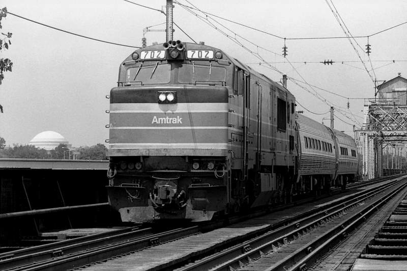

This page is about how to identify a train. In a post I discussed spotting the Silver Star, an Amtrak train, while on a bus in New Jersey. I completed this id in about 30 seconds. I’m going to review my methods, which admittedly are deductive, using an image from Flickr.

This image is licensed CC-BY-2.0 and was taken by Hunter Desportes. He, like many older railfans, has been scanning his slides and posting them to Flickr under a permissive license. Originally this image had a very limited description, noting a possible year (1974) and that it was an Amtrak train.
What more can we do with this image? First, we note the Jefferson Memorial behind and to the left. This places the train heading away from Washington, D.C., over the Potomac. Only one rail bridge fits that description: the Long Bridge into Rosslyn/Arlington.
The locomotive is a General Electric P30CH (“Pooch”). Besides visual details, the road number (No. 702) confirms the model. Railroads assign road numbers to all rolling stock, and those numbers are unique on the road. Two Amtrak locomotives have so far used this number: a GE P30CH and a GE P32AC-DM. It’s clearly not the latter, a variant of the GE Genesis. The P30CH began running in 1976, which means the initial identification of 1974 is inaccurate. Although the photo is black-and-white, we can tell from the size and arrangements of the stripes that the locomotive is wearing Phase II paint. Phase II began appearing in 1975; Phase III began replacing it in 1979.
We’ve now managed to locate the photo in time (1976-1980 or so) and in space (crossing the Potomac). We can do more. The locomotive is pulling two cars; visually we can identify them as Amfleet cars. Amfleet I, built by the Budd Company, entered service 1975-1978 and remain in service today. From the window arrangement the first car is a coach and the second car is a cafe. Pretty small train! This is where we have to start guessing.
Amtrak’s main yard in Washington is in Ivy City, north of Union Station. This is therefore probably a revenue train. In the 1970s Amtrak trains headed south from Washington to the Tidewater, Florida, the Carolinas, and Kentucky via West Virginia. The Southern Railway operated the Crescent to New Orleans via Atlanta and used its own power. This isn’t a long-distance train: too few coaches, no sleepers, no baggage car, no dining car. This isn’t the Southern Railway. Based on the size of the consist this is probably the Hilltopper, which operated from Boston to Catlettsburg, Kentucky from 1977-1979.
Happily, after suggesting this to the author, he agreed that the photo was probably taken in 1978. Am I sure of the identification? About 95% sure. It could be a stub train to Newport News or some kind of excursion, but it looks and quacks like the Hilltopper.